Modify Lists
In this chapter we are going to learn about the Modify Lists
Introduction
We can create this program quickly using the Quick Start component
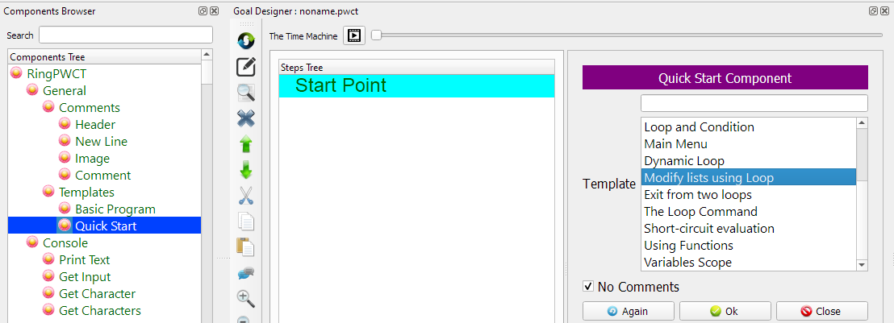
Program Steps
After selecting the (Modify Lists) template, we will get the next steps in the Goal Designer
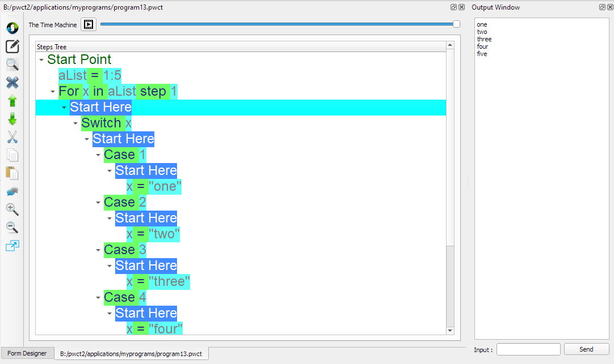
The Steps Tree:
aList = 1:5
For x in aList step 1
Switch x
Case 1
x = "one"
Case 2
x = "two"
Case 3
x = "three"
Case 4
x = "four"
Case 5
x = "five"
End of Switch
End of For Loop
Print aList
Creating the Program
To create this program we will use the next components
Assignment
For In Loop
Switch
Case
Print Text
In the begining the Steps Tree is empty
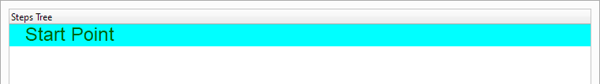
Select the (Assignment) component

Enter the data in the Interaction Page
Left side: aList
Right side: 1:5
This will create a list contains the numbers from 1 to 5
i.e. aList = [1,2,3,4,5]
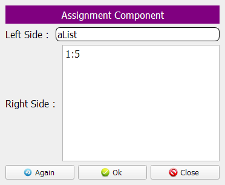
The Steps Tree will be updated
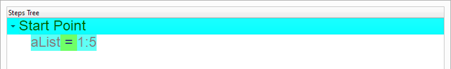
Select the (For In) component
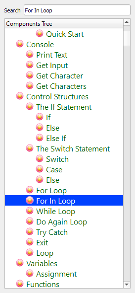
Enter the data in the Interaction Page
Variable: x
In: aList
Step: 1
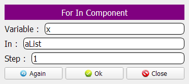
The Steps Tree will be updated
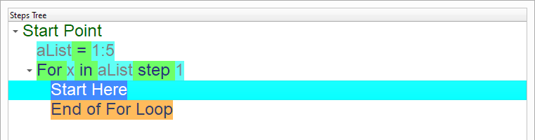
Select the (Switch) component
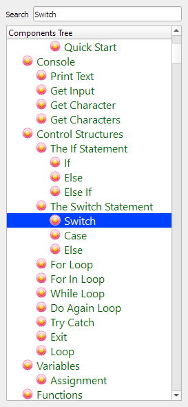
The variable will be (x)

We will update each list item based on the item number
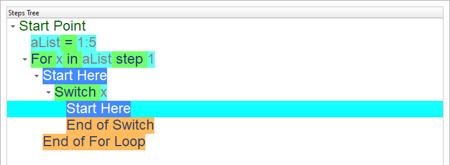
if the item number is 1, set the item value to “one”


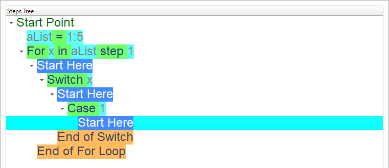

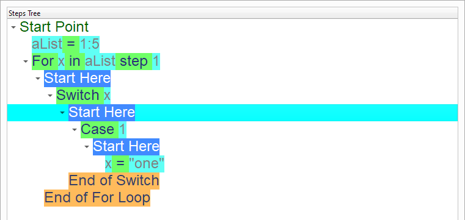
if the item number is 2, set the item value to “two”

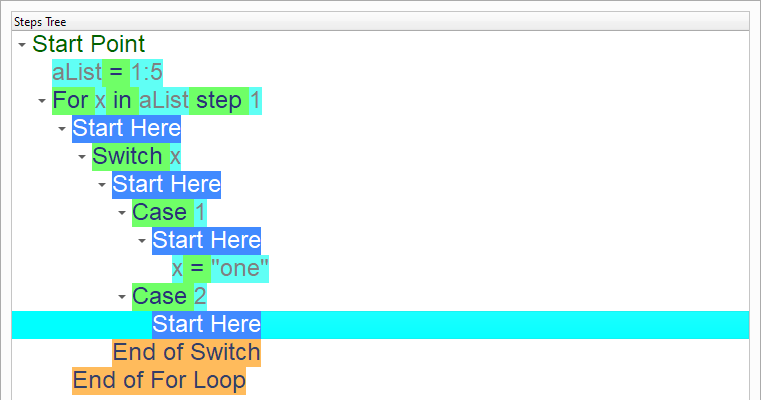

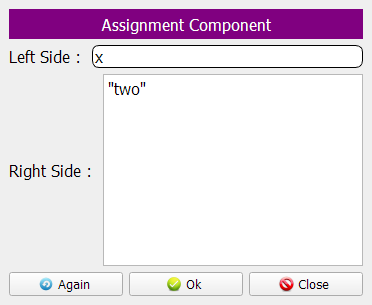
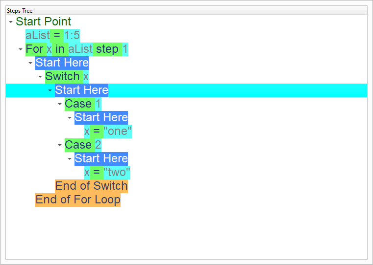

if the item number is 3, set the item value to “three”

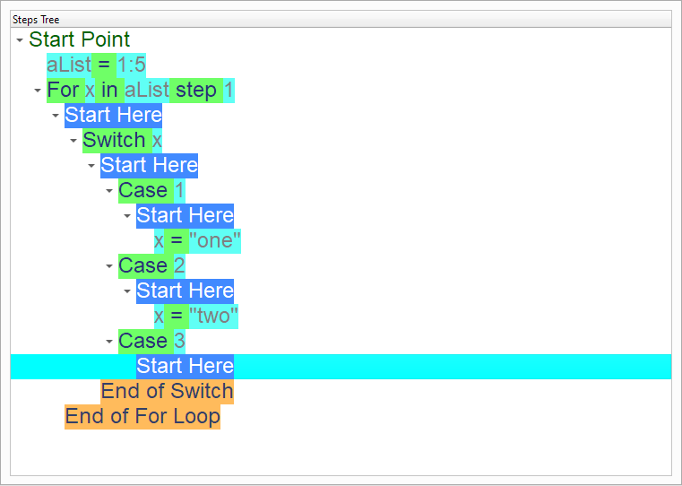

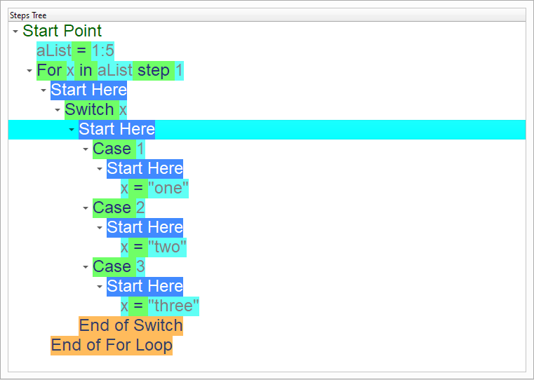
if the item number is 4, set the item value to “four”

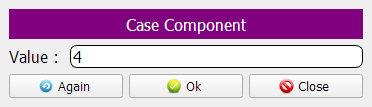
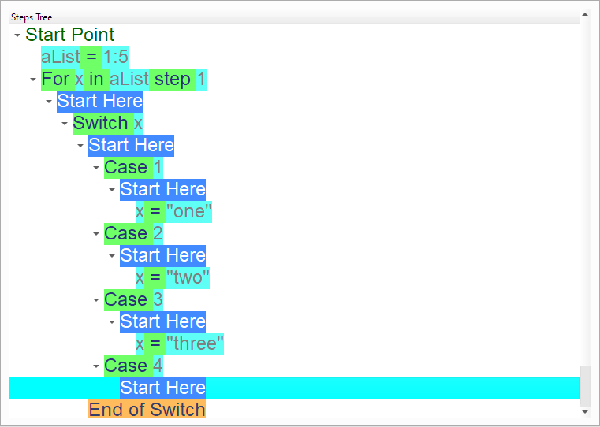

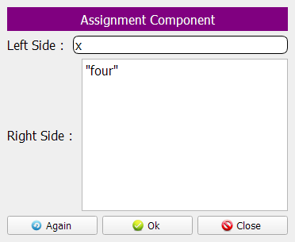
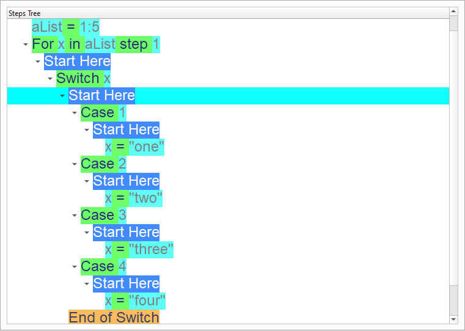
if the item number is 5, set the item value to “five”
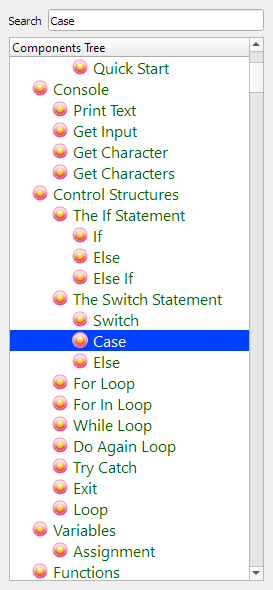
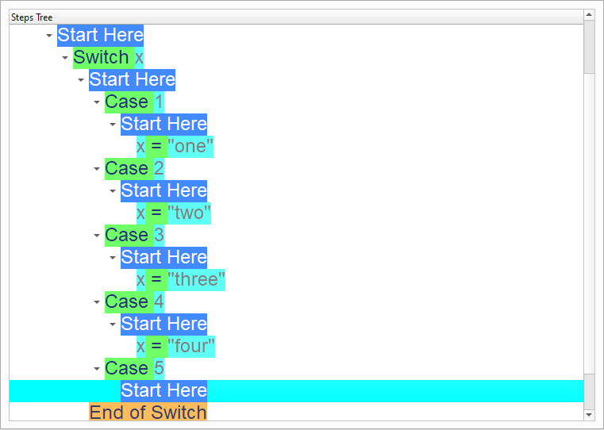

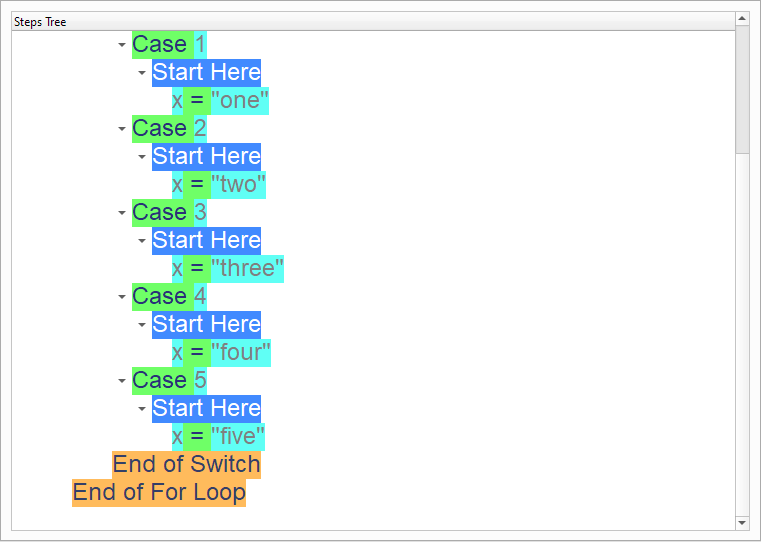

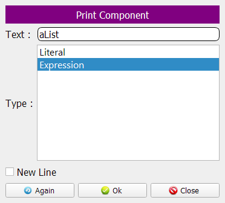
Now we have the final Steps Tree in our program
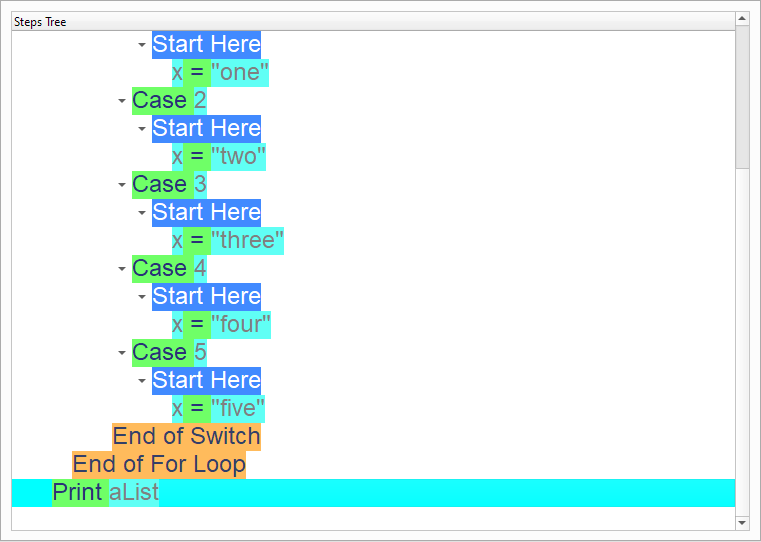